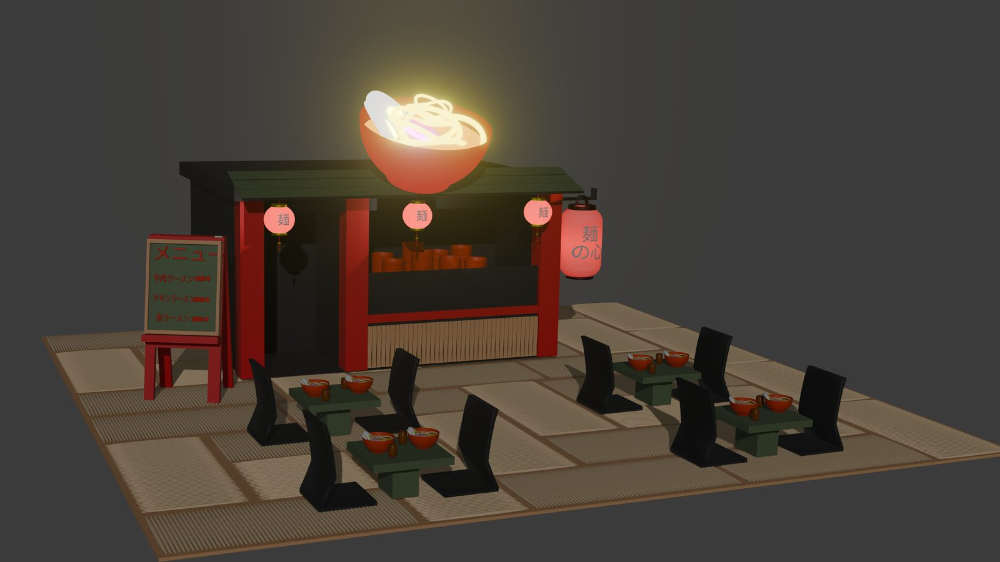
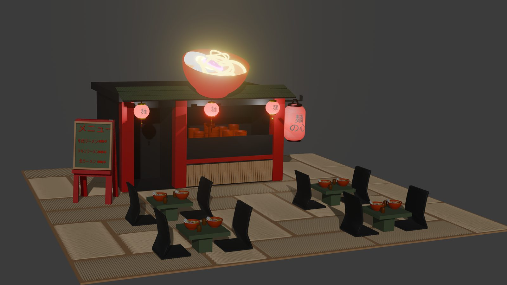

Japanse 3D Ramen Kiosk
Voor het vak 3D Design ontwierp ik een food kiosk geïnspireerd op Japan, een land dat mij al sinds mijn kindertijd fascineert. Tijdens mijn droomreis van één maand in Japan liet ik me volledig onderdompelen in de cultuur, architectuur en het eten. Deze ervaring heb ik vertaald naar een warme, sfeervolle ramen kiosk met neonlicht, houten texturen en traditionele Japanse accenten.
Belangrijkste kenmerken
- 3D-model volledig ontworpen en gerenderd in Blender.
- Inspiratie uit Japanse straatcultuur, neon en ramen shops.
- Realistische verlichting en materialen.

Ontwerpproces in Blender
Van referentie naar 3D-model
Ik startte dit project met een moodboard vol referentiebeelden van Japanse straatmarkten en ramen kiosks, verzameld tijdens mijn eigen reis door Japan. Vanuit die referenties bouwde ik het volledige model op in Blender: de houten constructie, de banken, de menukaart en de kenmerkende lantaarns. Elk element werd apart gemodelleerd en vervolgens samengevoegd tot één samenhangende scène.
Materialen & belichting
De sfeer van de kiosk wordt grotendeels bepaald door licht: warme lantaarns, een gloeiende ramen-bowl als uithangbord en zachte omgevingsverlichting die de houten texturen laat opwarmen. Ik experimenteerde met verschillende materiaaleigenschappen — van mat hout tot glanzend metaal — en stelde de belichting stap voor stap bij tot de render de knusse, levendige sfeer van een echte Japanse ramen kiosk uitstraalde.
Resultaat
Het eindresultaat is een volledig uitgewerkt 3D-concept van een moderne ramen kiosk, met authentieke details zoals Japanse banners, houten toonbanken en een warme gloed van neonlichten. Hieronder enkele renders:

Uitdagingen & oplossingen
Schaal en detail in balans
Een kiosk met tafels, banken, een menukaart en meerdere lantaarns bevat veel kleine details die elk hun eigen aandacht vragen, maar tegelijk mocht de scène niet te zwaar worden om vlot te blijven renderen. Ik werkte met aparte collecties per onderdeel (structuur, meubilair, decoratie) en optimaliseerde de polygon-density van elk object naargelang hoe dicht de camera erbij zou komen, zodat detail en performance in balans bleven.
Een geloofwaardige nachtsfeer
Het grootste risico bij een nachtscène met veel kunstlicht is dat de render plat of onnatuurlijk oogt. Door meerdere lichtbronnen met verschillende kleurtemperaturen te combineren — warm oranje lantaarnlicht, een koeler omgevingslicht en een subtiele gloed rond de ramen-bowl — en telkens de render te vergelijken met mijn eigen foto's uit Japan, kreeg de scène geleidelijk aan een geloofwaardige, sfeervolle diepte.
Compositie & camerastandpunt
Bij het kiezen van het camerastandpunt experimenteerde ik met verschillende hoeken om de kiosk zo uitnodigend mogelijk in beeld te brengen. Een lichte hoek van bovenaf toont zowel de zitgelegenheid als de kiosk zelf, terwijl de gloeiende ramen-bowl als visueel ankerpunt bovenaan de compositie fungeert. Deze keuzes zorgen ervoor dat de blik van de kijker natuurlijk over de scène beweegt: van de menukaart links, via de kiosk, naar de zitplaatsen vooraan. Kleine details, zoals de lichte wazigheid in de achtergrond en de warme kleurtoon over de hele scène, versterken bovendien het gevoel van een filmische, sfeervolle avondopname in plaats van een steriele productrender. Uiteindelijk gaat het bij een render als deze niet enkel om technische correctheid, maar vooral om het gevoel dat de kijker erbij krijgt — en dat gevoel van warmte en gezelligheid was voor mij de belangrijkste maatstaf tijdens elke beoordeling van het werk in uitvoering.
Context & doel
Dit project maakte deel uit van het vak 3D Design en had als doel om een omgeving volledig zelfstandig op te bouwen: van concept en referentiebeelden tot een afgewerkte, gepolijste render. Naast een technische oefening in Blender was het ook een persoonlijk project, waarin ik een reisherinnering kon vertalen naar een visueel verhaal.
Wat ik hieruit geleerd heb
Dit project leerde me vooral hoeveel impact licht heeft op de perceptie van een 3D-scène: met dezelfde modellen kan een andere belichting een volledig andere sfeer creëren. Ik werd vaardiger in het werken met materiaallagen, node-gebaseerde shaders en compositie, en leerde geduldig itereren — kleine aanpassingen aan kleur, intensiteit of positie van een lichtbron maken vaak het verschil tussen een render die "goed" aanvoelt en één die er nog niet helemaal is. Die iteratieve werkwijze pas ik sindsdien ook toe in mijn andere design- en front-endprojecten.
Volgende stappen
Een volgende stap voor dit project zou zijn om de scène interactief te maken, bijvoorbeeld als een kleine 3D-configurator waarin bezoekers zelf het tijdstip, seizoen of de sfeer kunnen aanpassen en meteen het effect op de belichting zien. Ik zou ook graag experimenteren met een volledige dag-nachtcyclus en meer omgevingsdetails, zoals voorbijgangers, stoom die opstijgt uit de ramen-bowls of straatverlichting op de achtergrond, om de kiosk nog meer te laten aanvoelen als een levend onderdeel van een grotere Japanse straat in plaats van een geïsoleerde scène. Een geanimeerde camera-tour door de scène, zoals in de bijgevoegde video, is alvast een eerste stap in die richting en iets wat ik in een volgende versie verder wil uitbreiden met meer beweging en detail.